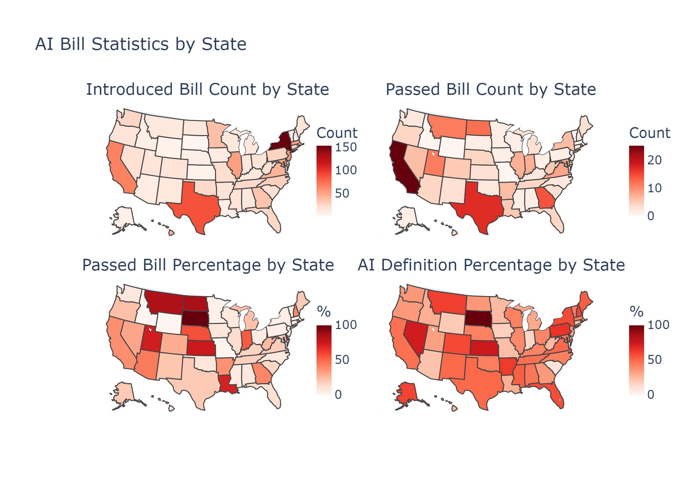

Research Proposal
Topic: AI Legislation in U.S. States
Internal communication version
AI Legislation in the U.S. 2025: Semantic Games and Partisan Bias in Artificial Intelligence Definition Using Large Language Models and Social Network Diffusion Analysis
Introduction
It is known that the United States introduced over 1,000 pieces of artificial intelligence (AI) legislation in 2025 according to public records. AI legislation until 2025 is concentrated at the state level, with significant variance in legislative output across states, both in terms of the number of laws passed and the issues addressed. However, U.S. states have not reached a consensus on AI definition. Since a definition determines who is subject to regulation and who is exempt, disagreements over the AI definition can directly affect regulatory effectiveness. Moreover, whether there are underlying evolutionary patterns or diffusion networks behind AI definition diversity remains unclear. This study aims to goes further to analyze the semantic similarity network of AI definitions to investigate whether (1) early bills possess a first-mover advantage in shaping subsequent definitions, and (2) whether states cluster into distinct definitional communities based on their economic and geographic attributes.
Literature Review
Parinandi et. al (2024)1 employed quantitative research to address the question of what drives AI policy in the United States. They gather data on the state-level adoption of AI policy, as well as roll call voting on AI bills, by state legislatures and analyze the political economy of AI legislation. They find that rising unemployment and inflation are negatively associated with a state’s AI policymaking; they also find that liberal lawmakers and Democrats are more likely to support bills establishing consumer protection requirements on AI usage. This study will examine whether the partisan divisions identified by Parinandi also extend to the micro-level of the legal definition of AI.
Complementing this discussion on policy drivers, DeFranco et.al (2024)2 highlights the technical knowledge gap among policymakers. They argue that because most officials lack the expertise to judge emerging AI technologies, they must rely on a comprehensive landscape of existing guidelines, international standards, and city-level directives to inform their oversight. Because policymakers lack technical expertise, the 2025 legislation will be highly confusing in its definition of AI, which is precisely why this study examines the concept of definition.
DePaula et.al (2024) relies on legislation that has already been adopted, which may somewhat limit the breadth of discussion and the predictive scope for the trend; and their data does not cover the new trend in 2025; also, did not delve into the semantic analysis defined by the text. However, comprehensive quantitative analysis based on the latest data remains scarce.
Beyond filling the data gap for 2025, this study moves past analysis by constructing a semantic similarity network to investigate the evolutionary dynamics and diffusion patterns of AI definitions across state lines.
Research Questions
Statutory Definitions
The 2025 AI legislation by states contains various definitions of AI. New terms such as generative AI, synthetic media, and foundational models have emerged; Democratic states may lean toward a broader definition, while republican states may focus on strict definition; The lack of uniform definitions across states creates potential regulatory risks. This divergence in statutory definitions provides the basis for constructing the similarity matrix, allowing us to test whether these definitions diffuse through a first-mover or via cluster based homophily.
This divergence raises a compelling research focus: do legislators genuinely engage with the definitional nuances of AI when drafting these bills, or do they merely adopt language from prior legislation without critical evaluation? Are the definitions internally consistent within a single state’s legislative corpus, and more broadly, is there a discernible pattern of diffusion across state boundaries? To systematically investigate these questions, we employ large language model technology to identify, extract, and compare statutory definitions across the legislative landscape, enabling us to uncover latent patterns that would otherwise remain obscured in the volume of textual data.
RQ1: Do temporally early bills are more likely to be adopted by later bills?
RQ2: Does the similarity network exhibit community structure, and do node attributes predict block membership?
Data Source
The data source is from state AI legislation, which will be over 1,000 piecesin 2025 according to public records3. The methodology of this study integrates natural language processing with large language models. The pipeline begins with preprocessing including tokenization and lemmatization to minimize noise from morphological variations and standardize keyword frequencies across the 2025 legislative textual database. This is followed by deep semantic extraction leveraging LLMs to automatically identify complex statutory AI definitions and uncover latent partisan bias within the bills.
Methodology
Notably, using large language models4 to automatically extract legislative positions represents the most advanced approach currently available. Recent research such as Kim et al. (2025)5 has already leveraged advanced AI frameworks including large language models to develop scalable pipelines which automatically extract positions from legislative activities. Also, automated processing of bill summaries has already demonstrated successful precedents. Following the precedent of the BillSum dataset (Kornilova et al., 2019)6, which focuses on the summarization of US Congressional and state bills, this study extends the scope to the semantic analysis of statutory definitions.
Last but not least, this study employs social network analysis to move beyond individual bill analysis, specifically utilizing GERGM and WSBM models to analyze the similarity matrix derived from LLM extracted AI definitions and to identify the structural diffusion patterns of AI legislation.
Hypotheses
H1: Significant block structure exists (model fit vs. null).
H2: Introduction time predicts block membership, indicating temporal clustering of definitions.
H3: Economic attributes predict block membership, indicating economic clustering.
H4: Geographic region predicts block membership, indicating regional diffusion patterns.
Preliminary Results
Preliminary analysis reveals partisan variation in AI definitional engagement. Democratic legislators introduced substantially more AI-related bills (737) than their Republican counterparts (427), with a higher proportion of Democratic bills containing explicit AI definitions (47%) compared to Republican bills (40%). This pattern suggests that Democratic legislators may engage more deliberately with definitional precision when drafting AI legislation, providing initial evidence for partisan divergence in how lawmakers approach the conceptual boundaries of artificial intelligence.

Geographic heterogeneity emerges across states in both legislative volume and definitional inclusion. California, New York, and Texas lead in introduced and passed bill counts, reflecting their roles as technology and economic hubs. However, passage rates and definition inclusion rates do not uniformly follow introduction volume—several mountain and plains states exhibit higher passage percentages despite lower absolute counts, while states such as Maine and scattered southern states demonstrate elevated rates of definition inclusion. These geographic patterns warrant further network-based analysis to uncover underlying diffusion mechanisms.

Collectively, these preliminary findings affirm that the question of definitional engagement is indeed worth investigating: state-level attributes—partisan composition, economic position, and geographic location—appear to shape whether legislators include AI definitions in their bills, validating the need for network-based diffusion analysis to uncover the underlying mechanisms.
References
AI@Meta. 2024. “The Llama 3 Herd of Models.” arXiv:2407.21783. https://arxiv.org/abs/2407.21783
DeFranco, Joanna F., and Luke Biersmith. 2024. “Assessing the State of AI Policy.” arXiv:2407.21717 [cs.AI]. https://doi.org/10.48550/arXiv.2407.21717
Eidelman, Vladimir. 2019. “BillSum: A Corpus for Automatic Summarization of US Legislation.” In Proceedings of the 2nd Workshop on New Frontiers in Summarization, 48–56. Association for Computational Linguistics. https://doi.org/10.18653/v1/D19-5406
Kim, Jiseon, Dongkwan Kim, Joohye Jeong, Alice Oh, and In Song Kim. 2025. “Measuring Interest Group Positions on Legislation: An AI-Driven Analysis of Lobbying Reports.” arXiv:2504.15333. https://arxiv.org/abs/2504.15333
NCSL. 2025. “Artificial Intelligence Legislation Database.” https://www.ncsl.org/financial-services/artificial-intelligence-legislation-database
Parinandi, Srinivas, Jesse Crosson, Kai Peterson, and Sinan Nadarevic. 2024. “Investigating the Politics and Content of US State Artificial Intelligence Legislation.” Business and Politics 26(2): 240–62. https://doi.org/10.1017/bap.2023.40
Wang, Bryan, and Danielle Haak. 2024. “Regulating Artificial Intelligence in the European Union and the United States.” Journal of Student Research 13(2). https://doi.org/10.47611/jsrhs.v13i2.6798
Footnotes
Parinandi, Srinivas, Jesse Crosson, Kai Peterson, and Sinan Nadarevic. 2024. “Investigating the Politics and Content of US State Artificial Intelligence Legislation.” Business and Politics 26(2): 240–62. https://doi.org/10.1017/bap.2023.40↩︎
DeFranco, Joanna F., and Luke Biersmith. 2024. “Assessing the State of AI Policy.” arXiv:2407.21717 [cs.AI]. https://doi.org/10.48550/arXiv.2407.21717↩︎
NCSL. 2025. “Artificial Intelligence Legislation Database.” https://www.ncsl.org/financial-services/artificial-intelligence-legislation-database↩︎
AI@Meta. 2024. “The Llama 3 Herd of Models.” arXiv:2407.21783. https://arxiv.org/abs/2407.21783↩︎
Kim, Jiseon, Dongkwan Kim, Joohye Jeong, Alice Oh, and In Song Kim. 2025. “Measuring Interest Group Positions on Legislation: An AI-Driven Analysis of Lobbying Reports.” arXiv:2504.15333. https://arxiv.org/abs/2504.15333↩︎
Eidelman, Vladimir. 2019. “BillSum: A Corpus for Automatic Summarization of US Legislation.” In Proceedings of the 2nd Workshop on New Frontiers in Summarization, 48–56. Association for Computational Linguistics. https://doi.org/10.18653/v1/D19-5406↩︎